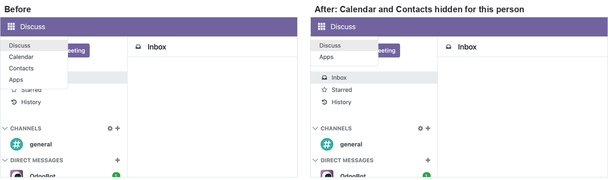
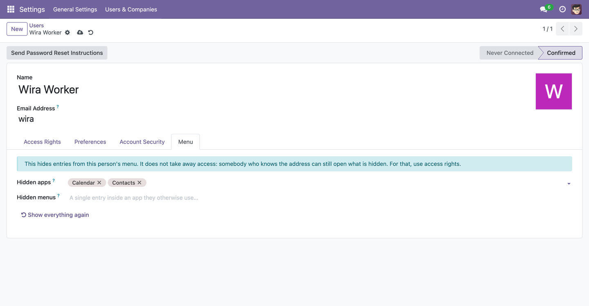
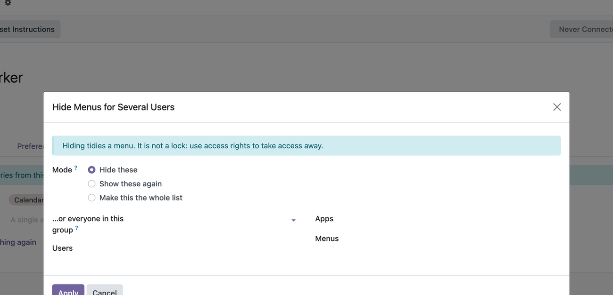

Take Calendar, Discuss or any menu entry out of one person's screen — not everyone's.
Odoo 17.0 · 18.0 · 19.0 | Community & Enterprise | Free, LGPL-3
Odoo shows everybody every app their access rights allow. For most people that is more than they will ever open: a warehouse operator does not need Calendar, Discuss and Contacts in their way, and a new starter faced with twenty apps does not know where to begin. Two lists on a user, and their menu is the shape of their job.

The same person, before and after. Everybody else's menu is untouched.
Hidden appsWhole applications — Calendar, Discuss, Contacts, Inventory, anything. They leave the app row and everything inside them goes with them. |
Hidden menusSingle entries inside an app they otherwise use — one report, one configuration page. Anything underneath that entry goes too. |

A Menu tab on the user, visible to administrators only. One link gives the person their whole menu back.

Under Settings → Users & Companies → Hide Menus. Pick a group and the user list fills itself. Then hide these, show these again, or make this the whole list — useful when fifteen accounts for a new branch should all look the same.
It hides. It does not forbid. Somebody who knows the address can still open what is hidden, exactly as before, and so can anything that links to it. If a person must not reach a feature, take the access right away — that is what access rights are for. This module is for tidying a screen that has grown too busy, and for that it is exactly the right tool.
An administrator always keeps Settings. If you hide Settings from somebody who has administrator access, the module quietly leaves it in place — otherwise a mistake would have no way back. Everyone else can lose it like any other app.
Odoo builds each person's menu once and caches it per user. This module takes entries out at exactly those two points — the row of apps and everything underneath — and clears that cache when you change a list, so the change arrives on the person's next page load. No JavaScript patch, no overridden views, nothing that fights with other modules.
Nothing is deleted or deactivated: the menus themselves are untouched, which is why one person losing Calendar never affects anybody else, and why uninstalling the module gives everyone their full menu back immediately.
Does it work on custom apps?
Yes. Any menu is a menu, whether it came with Odoo, from the store, or from your own
development.
Can a user undo it themselves?
No. The two lists sit on their user record, which only administrators may edit.
Does it slow Odoo down?
No. It adds one list of menu ids to a menu that was already being built and cached.
What happens when I uninstall it?
Everybody gets their whole menu back. The hidden lists are stored in the module's own
tables and go with it.
Multi-company?
Hiding is per user, so it follows the person regardless of which company they are in.
Depends on base alone. Available for Odoo 17.0, 18.0 and 19.0, free and open
source under LGPL-3. No scheduled job, no assets, nothing fetched from the internet.